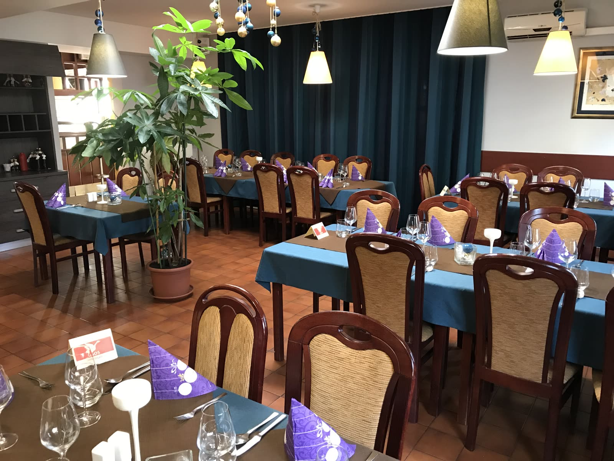
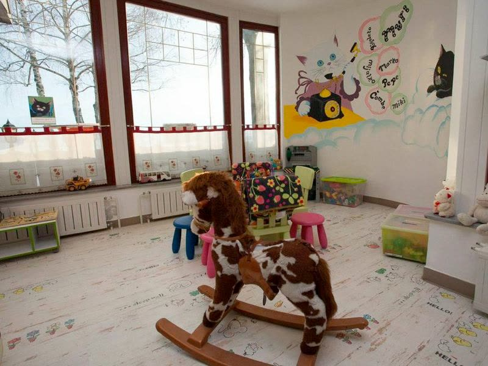
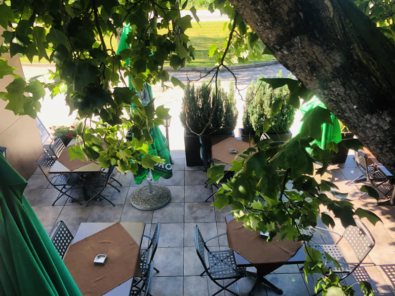
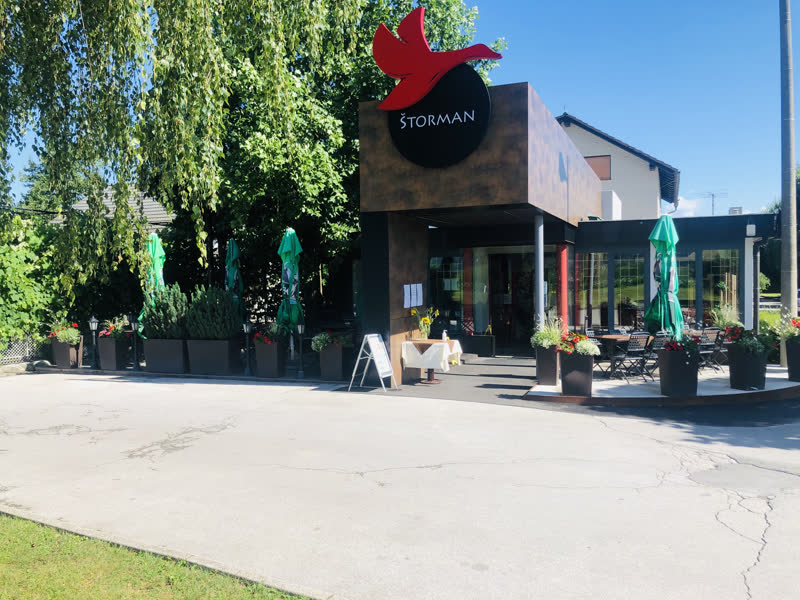

Malice med tednom
Tri dnevne malice in dodatne malice vsak delovni dan, postrežene do 14. ure.

Šempeter v Savinjski dolini
Gostilna v osrčju Savinjske doline, dva kilometra od avtocestnega izvoza. Po navedbah podjetja je tu gostinstvo Štorman doma od poletja 1980, od toplih dopoldanskih obrokov do slavnostnih menijev.
Tri dnevne malice in dodatne malice vsak delovni dan, postrežene do 14. ure.
Dva dnevna menija med tednom do 16. ure in trije sestavljeni meniji ob sobotah in nedeljah.
Jedi po naročilu, nekatere z oznako "S tradicijo". Jedilni list tudi v angleščini, nemščini in italijanščini.
Mesni, ribji in vegetarijanski sestavljeni meniji; catering za poroke, jubileje in proslave, po navedbah na njihovi strani.

Restavracija
Prijetna gostilna v osrčju Savinjske doline, doline hmelja. Lokale so, kot pišejo sami, opremljali tako, da se v njih vse skupine ljudi počutijo prijetno, jedilne liste pa pripravljali tako, da vsak za vsako priložnost najde nekaj zase.

Za družine
Restavracijo krasijo cvetje, drevje in prostor za otroško igro. Otroški kotiček so malim obiskovalcem uredili tudi v notranjosti.


Jedilni list
Izbor jedi, kot so zapisane na njihovem jedilnem listu. Oznaka "S tradicijo" je njihova: nosijo jo jedi iz začetkov. Cene na predogledu niso navedene.
Vinska karta
Kleti, ki jih navaja njihova vinska karta. Na novi strani vsaka buteljka dobi svojo vrstico z letnikom in okolišem, tako kot na njihovi karti.
Aktualno
Primer: sobota in nedelja, 21. in 22. 11. 2026, kot objavljeno na storman.si
Kontakt